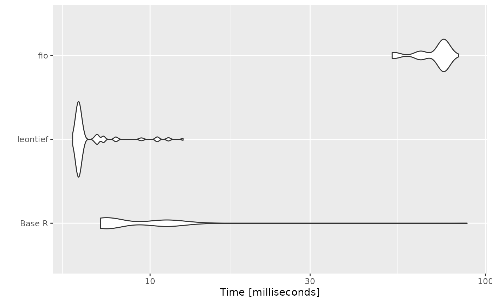

Benchmarking
benchmark.RmdIntroduction
This vignette presents a benchmarking analysis comparing the
performance of functions from the fio package with
equivalent base R functions. The fio package provides a set
of functions for input-output analysis, a method used in economics to
analyze the interdependencies between different sectors of an
economy.
In this document, we will focus on two key functions: the technical coefficients matrix calculation and the Leontief inverse matrix calculation. These functions are fundamental to input-output analysis, and their performance can significantly impact the speed of larger analyses.
Our benchmarking tests, which involve running these functions
repeatedely in simulated datasets, show that the fio
package functions are faster than the equivalent base R functions. This
improved performance can make a substantial difference in larger
analyses, making the fio package a valuable tool for
input-output analysis in R.
The tests were run on a simulated \(1000 \times 1000\) matrix, and each test was repeated 100 times to account for variability. Please note that the results of this benchmarking analysis are dependent on the specific test datasets used and the hardware on which the algorithms are run. Therefore, the results should be interpreted in the context of these specific conditions.
Technical coefficients matrix
The technical coefficients matrix calculation, a key step in
input-output analysis, was tested using the tec_coeff()
function from the fio package, equivalent functions from
the leontief package, and a base R implementation. The
results show that both fio and leontief
functions execute almost instantaneously, with leontief
slightly faster. In contrast, the base R implementation is about 100
times slower.
# set seed
set.seed(100)
# data
matrix_dim <- 500
intermediate_transactions <- matrix(
as.double(sample(1:1000, matrix_dim^2, replace = TRUE)),
nrow = matrix_dim,
ncol = matrix_dim
)
total_production <- matrix(
as.double(sample(4000000:6000000, matrix_dim, replace = TRUE)),
nrow = 1,
ncol = matrix_dim
)
# Base R function
tec_coeff_r <- function(intermediate_transactions, total_production) {
tec_coeff_matrix <- intermediate_transactions %*% diag(1 / as.vector(total_production))
return(tec_coeff_matrix)
}
# {fio} setup
iom_fio <- fio::iom$new("iom", intermediate_transactions, total_production)
# benchmark
benchmark_a <- microbenchmark::microbenchmark(
`Base R` = tec_coeff_r(intermediate_transactions, total_production),
leontief = leontief::input_requirement(intermediate_transactions, total_production),
fio = fio:::tec_coeff(intermediate_transactions, total_production),
times = 100,
check = "equivalent"
)
print(benchmark_a)
#> Unit: microseconds
#> expr min lq mean median uq max neval
#> Base R 3416.378 3523.6490 4202.348 3568.1220 4332.755 15612.679 100
#> leontief 755.480 802.4985 1556.852 840.6345 1694.284 9335.028 100
#> fio 1332.958 1372.6280 2042.262 1427.4200 2266.181 9435.576 100
# plot
ggplot2::autoplot(benchmark_a)Leontief inverse matrix
For the Leontief inverse matrix calculation, we will use the technical coefficients matrix calculated in the previous section. Here, fio is the fastest algorithm, followed by leontief and a surprisingly efficient base R implementation.
# data
iom_fio <- iom_fio$tec_coeff()
technical_coefficients_matrix <- iom_fio$technical_coefficients_matrix
# R function
leontief_inverse_r <- function(technical_coefficients_matrix) {
dim <- nrow(technical_coefficients_matrix)
leontief_inverse_matrix <- solve(diag(dim) - technical_coefficients_matrix)
return(leontief_inverse_matrix)
}
# benchmark
benchmark_b <- microbenchmark::microbenchmark(
`Base R` = leontief_inverse_r(technical_coefficients_matrix),
leontief = leontief::leontief_inverse(technical_coefficients_matrix),
fio = fio:::leontief_inverse(technical_coefficients_matrix),
times = 100,
check = "equivalent"
)
print(benchmark_b)
#> Unit: milliseconds
#> expr min lq mean median uq max neval
#> Base R 7.110205 7.343851 9.823111 7.596096 11.004941 88.19357 100
#> leontief 5.875810 6.065980 6.643875 6.157451 6.327949 12.54463 100
#> fio 52.726379 64.252499 70.485423 74.650171 75.048634 83.17785 100
# plot
ggplot2::autoplot(benchmark_b)